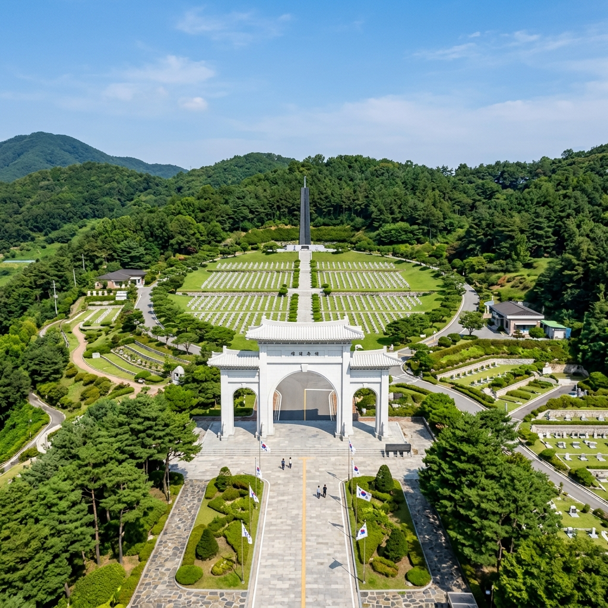
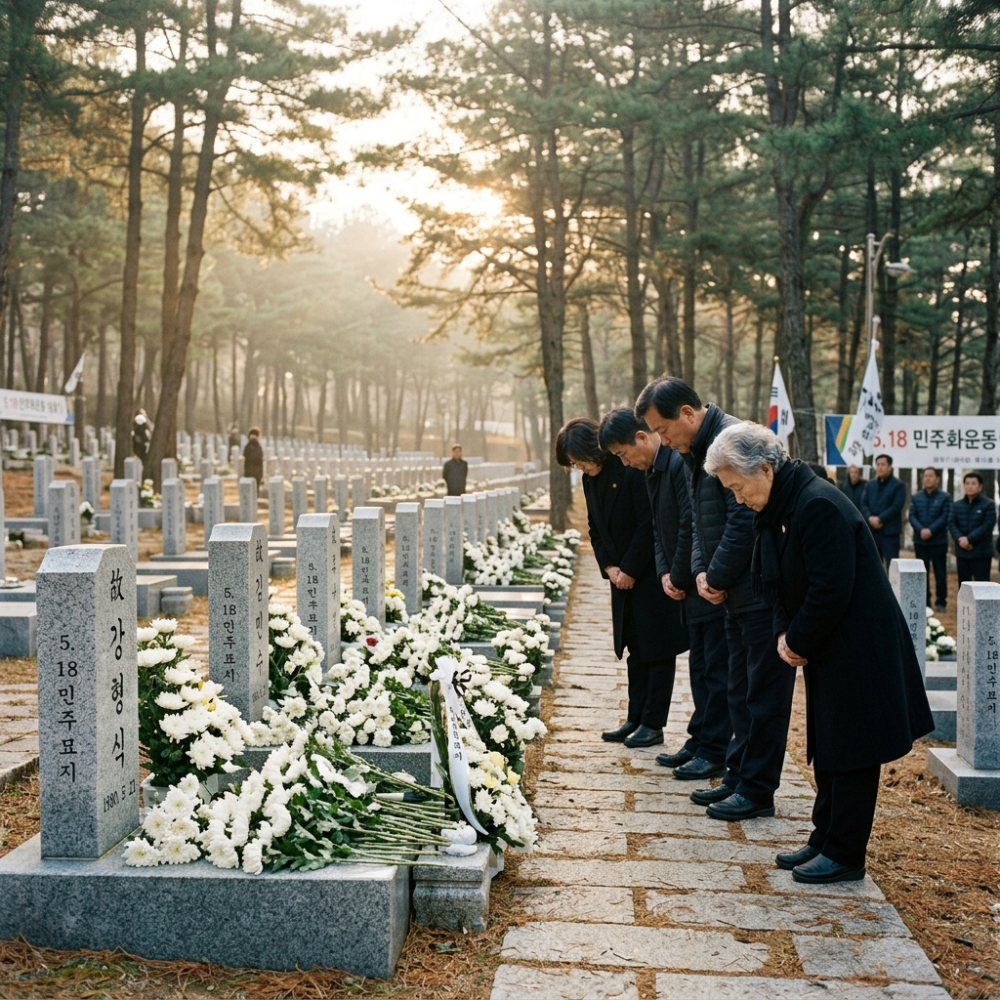
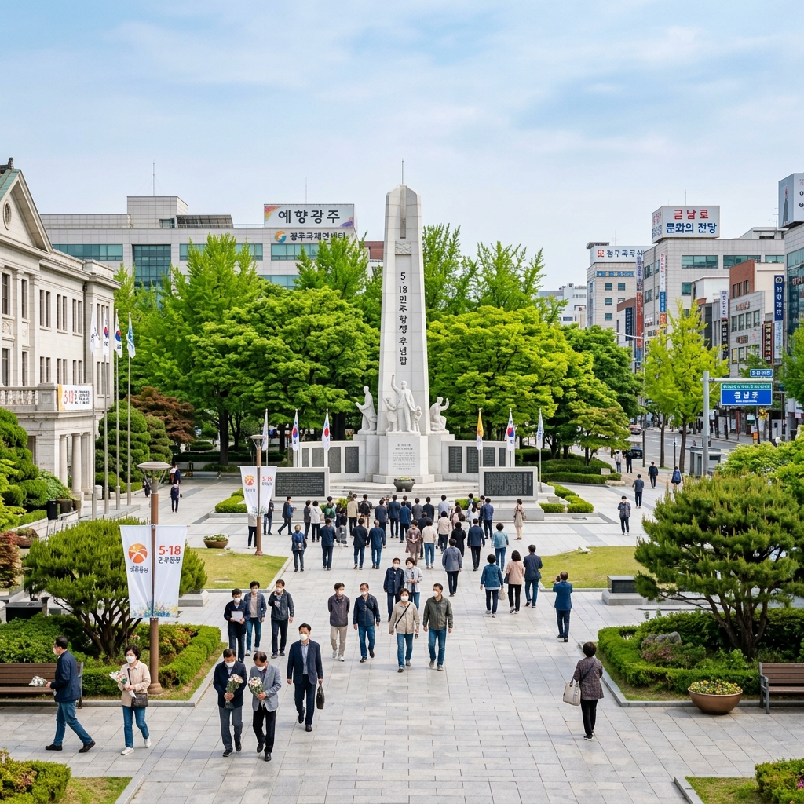

광주 국립5.18민주묘지 2026
제46주년 기념식 추모 코스 완벽 가이드
5월 18일이 다가올 때마다 광주는 대한민국 민주주의의 심장부로 떠오릅니다. 국립5.18민주묘지는 1980년 5월, 자유와 민주주의를 위해 목숨을 바친 광주 시민들의 숭고한 희생이 깃든 성지입니다. 2026년은 5.18 민주화운동 제46주년을 맞이하는 해로, 매년 이곳을 찾는 참배객과 추모객의 발길이 이어지고 있습니다. 역사의 현장을 발로 걷고, 그분들의 이야기를 가슴에 새기는 5월의 여행을 지금 안내해 드리겠습니다.
🕊️ 5.18 민주화운동의 역사적 의미
1980년 5월 18일, 광주에서는 신군부의 계엄령 확대와 전두환 정권의 쿠데타에 맞서 시민들이 거리로 나섰습니다. 열흘간의 항쟁(5월 18일~27일) 동안 수많은 시민과 학생들이 목숨을 잃었고, 이 사건은 대한민국 민주화 운동의 결정적 전환점이 되었습니다.
5.18 민주화운동은 단순한 지역 사건이 아니었습니다. 군부 독재에 맞선 시민의 용기와 연대가 1987년 6월 민주항쟁, 나아가 대한민국 민주주의 체제 확립으로 이어지는 역사적 도화선이 되었기 때문입니다. 오늘날 우리가 누리는 자유와 민주주의의 뿌리에는 그 시절 광주 시민들의 희생이 자리하고 있습니다.
2011년에는 5.18 민주화운동 기록물이 유네스코 세계기록유산으로 등재되어 세계가 공인한 민주주의 유산으로 인정받았습니다. 이제 국립5.18민주묘지는 대한민국의 역사를 배우고 반성하며 미래를 다짐하는 교육의 현장이자, 전 세계 인권운동가들이 찾아오는 성지로 자리매김하고 있습니다.

[국립5.18민주묘지 전경] / AI 생성 이미지
🏛️ 국립5.18민주묘지 주요 시설 안내
광주 북구 운정동에 위치한 국립5.18민주묘지는 1997년 5월 18일에 정식 개장한 이후 오월 영령들의 안식처이자 추모의 성지로 기능하고 있습니다.
| 구분 | 내용 |
|---|
| 주소 | 광주광역시 북구 민주로 200 |
| 관람 시간 | 06:00~18:00 (동절기 06:00~17:00) |
| 입장료 | 무료 |
| 주차 | 무료 주차장 운영 |
| 문의 | 062-268-0518 |
| 홈페이지 | 국립5.18민주묘지 공식 사이트 |
묘지 내 주요 시설로는 민주의 문(정문), 추모관(5.18 역사 전시), 추모탑(높이 40m), 5·18역사공원, 민주광장 등이 있습니다. 묘역은 유공자 묘역(구묘역)과 신묘역으로 나뉘며, 구묘역에는 항쟁 직후 가매장되었다가 이장된 최초 희생자들이, 신묘역에는 이후 인정된 유공자들이 안치되어 있습니다.
추모관은 1980년 5월 18일부터 27일까지의 항쟁 과정을 사진·영상·유물로 기록하고 있으며, 당시 사용된 총탄과 시민들의 일기, 항쟁 참가자들의 증언 영상이 전시되어 있습니다. 방문 시 반드시 추모관을 먼저 관람하고 묘역을 참배하는 순서를 추천드립니다.
🎗️ 2026년 제46주년 기념식 및 행사 일정
2026년 5월 18일은 5.18 민주화운동 제46주년 기념일입니다. 국가보훈부 주관으로 국립5.18민주묘지에서 공식 기념식이 거행되며, 광주광역시와 5.18 관련 단체들이 주관하는 다채로운 행사가 금남로 일대에서 함께 열립니다.
📅 5월 17일(일) — 5.18민중항쟁 추모식
광주광역시 및 5.18 단체 주관. 전야제 성격의 추모 문화제가 금남로 5.18민주광장에서 열립니다. 풍물패 공연, 오월 추모 시낭독, 촛불 추모 행렬이 진행됩니다.
📅 5월 18일(월) — 제46주년 공식 기념식
국가보훈부 주관으로 오전 10시 국립5.18민주묘지에서 거행됩니다. 대통령을 비롯한 주요 인사들이 참석하며, 전국에서 모인 시민들과 함께 묵념 및 헌화가 진행됩니다.
📅 기념 주간(5월 14일~21일) — 시민 문화 행사
금남로 일대 '시민난장' — 오월 주먹밥 나눔, 5.18 사진전, 체험 부스 등 다양한 시민 참여형 행사가 열립니다. 5.18기념재단 주관의 국제 인권 심포지엄, 광주인권상 시상식도 이 기간에 진행됩니다.
기념식 당일에는 참배 인원이 급격히 늘어나므로 이른 아침 방문을 권장합니다. 기념식 관람을 원하신다면 오전 9시 이전에 도착하여 자리를 잡으세요.

[5.18민주묘지 참배 및 추모 행사] / AI 생성 이미지
🚶 광주 민주올레길 — 역사를 걷는 추모 코스
국립5.18민주묘지 방문과 함께 광주 도심의 5.18 역사 현장을 연결하는 민주올레길을 걸어보세요. 5.18의 주요 현장을 이어주는 이 길은 단순한 관광 코스가 아니라, 역사와 직접 대화하는 경험입니다.
① 국립5.18민주묘지 (출발점) — 참배 후 추모관 관람. 약 1~2시간 소요.
② 5.18기념공원 — 광주 북구에 위치. 5.18 항쟁탑, 민주광장, 야외 전시 공간 등이 있습니다. 연중 무료 개방.
③ 금남로 5.18민주광장 (구 전남도청 앞) — 1980년 5월 항쟁의 심장부였던 곳입니다. 지금은 광주의 문화·행사 중심지로, 5월에는 각종 추모 문화 행사가 열립니다.
④ 전일빌딩245 — 1980년 5월 헬기 사격의 증거인 탄흔이 발견된 역사적 건물. 현재는 문화복합공간으로 리모델링되어 5.18 전시와 시민 공간으로 운영됩니다.
⑤ 국립아시아문화전당(ACC) — 구 전남도청 자리에 세워진 아시아 최대 규모의 문화 복합 공간입니다. 지하에 당시 도청 잔해를 보존한 역사 공간이 있습니다.
🚗 교통 및 접근 방법
국립5.18민주묘지는 광주광역시 북구 운정동에 위치합니다. 광주 도심에서 차량으로 약 15~20분 거리에 있습니다.
🚌 대중교통 이용 시
광주송정역(KTX) 또는 광주역에서 시내버스 이용. 518번 버스(5.18민주묘지행 직행)가 운행됩니다. 소요 시간 약 30~40분. 광주 지하철 1호선 문화전당역에서 버스 환승도 가능합니다.
🚗 자가용 이용 시
호남고속도로 광주 나들목에서 민주로 방향 진입. 국립5.18민주묘지 무료 주차장을 이용. 5월 18일 기념식 당일에는 주차 공간이 빠르게 소진되므로 대중교통 이용을 강력히 권장합니다.
서울에서 당일치기 방문을 원하신다면 KTX를 이용해 광주송정역까지 약 1시간 40분이면 도착할 수 있습니다. 이른 아침 출발하면 충분히 주요 명소를 모두 돌아볼 수 있습니다.
🍽️ 광주 대표 맛집 — 5.18의 흔적과 함께하는 식도락
광주는 '맛의 도시'로 불릴 만큼 풍성한 음식 문화를 자랑합니다. 추모 방문 후 광주의 대표 음식으로 원기를 회복해 보세요.
오월 주먹밥 — 5.18 항쟁 당시 시민들이 서로 나눠 먹던 주먹밥은 광주 정신의 상징입니다. 기념식 기간 중 금남로 일대에서 무료로 나눔을 받을 수 있으며, 광주 곳곳의 향토 식당에서도 재현된 주먹밥을 맛볼 수 있습니다.
광주 떡갈비 — 광주·전남의 대표 향토 음식으로, 소고기와 돼지고기를 혼합한 갈비살을 다져 양념한 후 구워낸 음식입니다. 무등산 아래 인근 식당가에서 가장 정통 떡갈비를 맛볼 수 있습니다.
광주식 한정식 — 전라도 특유의 기품 있는 상차림이 특징입니다. 국립5.18민주묘지 인근 음식점에서도 정갈한 한정식을 제공합니다.

[광주 금남로 5.18민주광장] / AI 생성 이미지
📚 5.18 역사 학습 필수 방문지
국립5.18민주묘지 외에도 5.18의 역사를 깊이 이해하기 위해 방문해야 할 장소들이 광주 곳곳에 있습니다.
5.18민주화운동기록관 — 광주 동구 금남로에 위치. 유네스코 세계기록유산으로 등재된 5.18 관련 기록물들을 직접 열람할 수 있는 공간입니다. 1980년 5월의 상황을 담은 사진, 문서, 영상 자료가 체계적으로 보존·전시됩니다.
전일빌딩245 — 2017년 탄흔 조사에서 헬기 사격의 물리적 증거가 발견된 역사적 건물입니다. 현재 문화 복합 공간으로 운영 중이며, 245개의 탄흔이 발견된 역사적 사실을 기념하는 전시 공간이 있습니다.
옛 전남도청 민주평화교류원 — 1980년 항쟁의 마지막 거점이었던 전남도청 구관 건물을 보존한 공간으로, 도청 회의실 등 당시 모습이 그대로 보존되어 있습니다. 국립아시아문화전당(ACC) 내에 역사문화공간으로 관리됩니다.
📖 참배 에티켓 및 방문 시 유의사항
국립5.18민주묘지는 성스러운 국가 추모 공간이므로 방문 시 반드시 지켜야 할 예절이 있습니다.
복장 — 지나치게 노출이 심하거나 화려한 복장은 자제하세요. 단정한 차림으로 방문하는 것이 예의입니다.
사진 촬영 — 묘비 앞에서 밝은 표정의 사진 촬영은 삼가세요. 묘역 내 자연 경관이나 기념물 위주의 사진 촬영은 허용됩니다.
음식물 — 묘역 내에서는 음식물 섭취를 자제하고, 쓰레기를 반드시 지정된 장소에 버리세요.
어린이 동반 시 — 학교 현장학습으로도 많이 방문하는 곳인 만큼, 어린이와 함께 방문하면 자연스럽게 민주주의와 역사를 교육할 수 있습니다. 방문 전 5.18에 관한 간단한 역사 이야기를 먼저 나눠보시길 추천합니다.
💐 5월, 대한민국 민주주의를 걷는 여행
5월의 광주는 아픔과 자랑스러움이 공존하는 복잡한 감정을 안겨줍니다. 거리에는 5월 연등과 현수막이 가득하고, 곳곳에서 추모와 기념의 행사들이 이어집니다. 국립5.18민주묘지를 참배하고, 금남로를 걸으며, 전일빌딩의 탄흔을 손으로 만져보면 — 그 시절 광주의 5월이 얼마나 뜨겁고 처절했는지를 온몸으로 느끼게 됩니다.
이 여행은 단순한 관광이 아닙니다. 오늘 우리가 당연하게 누리고 있는 민주주의가 얼마나 값비싼 희생 위에 세워진 것인지를 되새기는 시간입니다. 5월에 광주를 찾아 오월 영령들에게 감사의 마음을 전해보세요. 그 발걸음 자체가 하나의 추모이자, 민주주의를 지키겠다는 다짐이 됩니다.
#광주여행
#5.18민주화운동
#국립5.18민주묘지
#광주민주올레길
#5월18일
#역사여행
#민주주의성지
#광주가볼만한곳
#호국보훈
#광주맛집